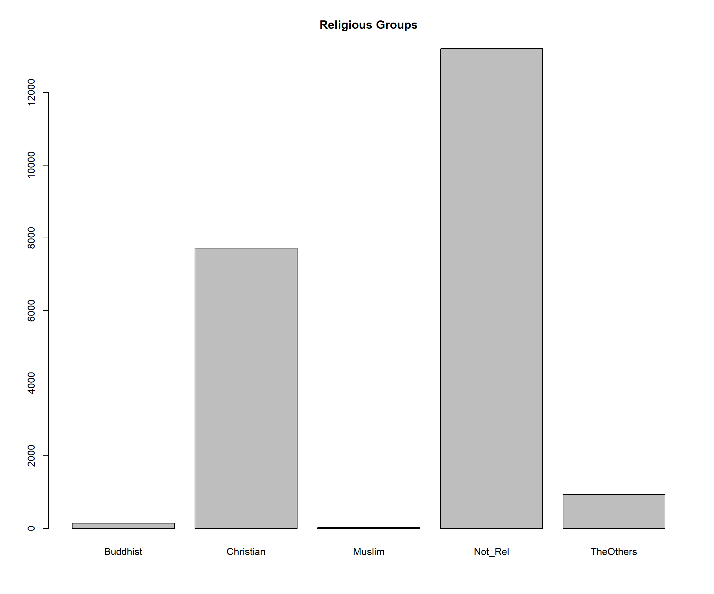
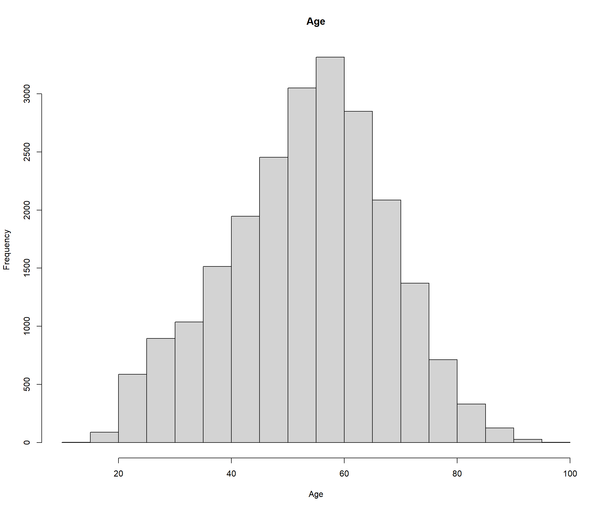
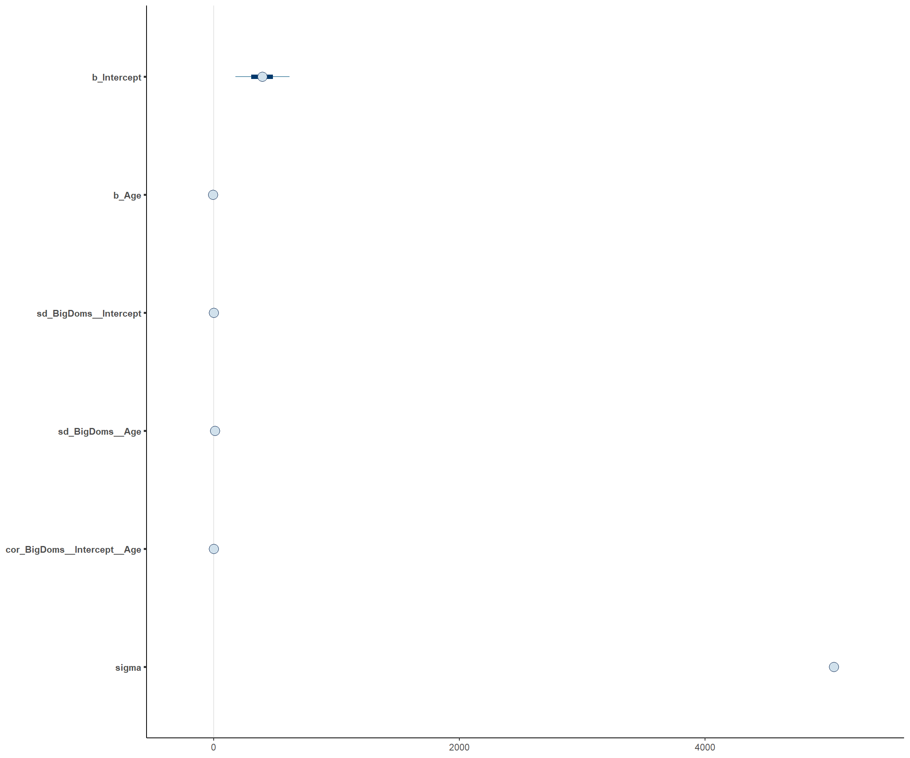
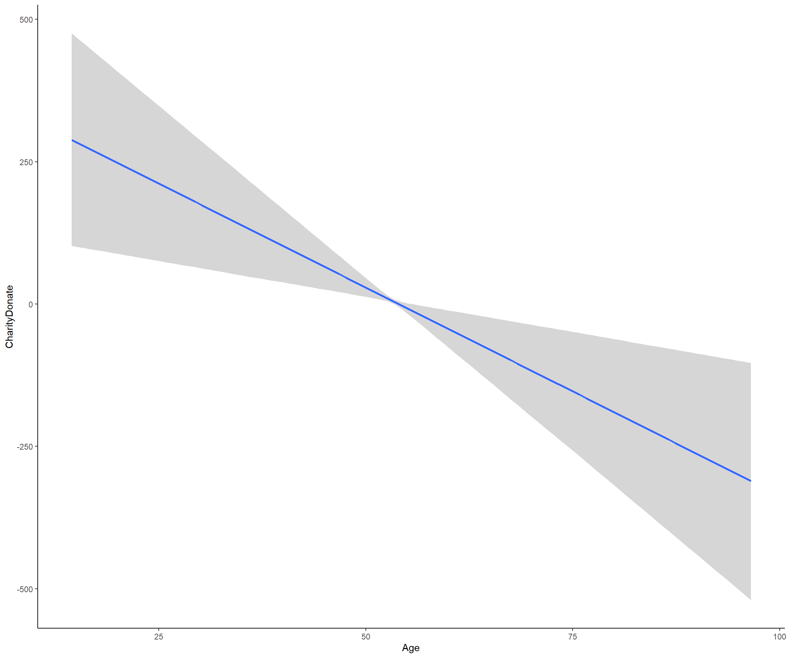

Model for Charitable Donations as predicted by Age and Religious Group.
CharityDonate
How much money have you donated to charity in the last year?
Age
What is your age?
BigDoms
What religion or spiritual group? Christian, Buddhist, Muslim, Not Religious, Other
| Descriptive Statistics | |
|---|---|
| Variable | N = 22,3961 |
| Annual Charitable Donations | 955.52 (5,613.75) |
| (Missing) | 891 |
| Age | 53.33 (14.14) |
| Religious Group | |
| Buddhist | 147 (0.7%) |
| Christian | 7,719 (35%) |
| Muslim | 29 (0.1%) |
| Not_Rel | 13,210 (60%) |
| TheOthers | 940 (4.3%) |
| (Missing) | 351 |
|
1
Mean (SD); n (%)
|
|


The model used is multi level with group varying slopes
Family: gaussian
Links: mu = identity; sigma = identity
Formula: CharityDonate ~ 1 + Age + (1 + Age | BigDoms)
Data: df (Number of observations: 21301)
Samples: 4 chains, each with iter = 2000; warmup = 1000; thin = 1;
total post-warmup samples = 4000
Group-Level Effects:
~BigDoms (Number of levels: 5)
Estimate Est.Error l-95% CI u-95% CI
sd(Intercept) 0.99 1.02 0.02 3.73
sd(Age) 9.97 1.71 7.16 13.82
cor(Intercept,Age) -0.01 0.45 -0.82 0.80
Rhat Bulk_ESS Tail_ESS
sd(Intercept) 1.00 3059 1604
sd(Age) 1.00 2290 2299
cor(Intercept,Age) 1.00 762 1478
Population-Level Effects:
Estimate Est.Error l-95% CI u-95% CI Rhat
Intercept 394.81 131.87 138.79 651.25 1.00
Age -7.31 2.47 -12.12 -2.51 1.00
Bulk_ESS Tail_ESS
Intercept 4335 2996
Age 4330 3070
Family Specific Parameters:
Estimate Est.Error l-95% CI u-95% CI Rhat Bulk_ESS
sigma 5047.49 21.60 5004.83 5089.47 1.00 5901
Tail_ESS
sigma 3169
Samples were drawn using sampling(NUTS). For each parameter, Bulk_ESS
and Tail_ESS are effective sample size measures, and Rhat is the potential
scale reduction factor on split chains (at convergence, Rhat = 1).

We fitted a Bayesian linear mixed model (estimated using MCMC sampling with 4 chains of 2000 iterations and a warmup of 1000) to predict CharityDonate with Age (formula: CharityDonate ~ 1 + Age). The model included Age and BigDoms as random effects (formula: ~1 + Age | BigDoms). Priors over parameters were set as normal (mean = normal(-1, 10), SD = 10.00) distributions. The models explanatory power is very weak (R2 = 8.92e-03, 89% CI [6.94e-03, 0.01], adj. R2 = 8.51e-03) and the part related to the fixed effects alone (marginal R2) is of 3.35e-04 (89% CI [2.44e-05, 6.95e-04]). Within this model:
Following the Sequential Effect eXistence and sIgnificance Testing (SEXIT) framework, we report the median of the posterior distribution and its 95% CI (Highest Density Interval), along the probability of direction (pd), the probability of significance and the probability of being large. The thresholds beyond which the effect is considered as significant (i.e., non-negligible) and large are |281.90| and |1691.42| (corresponding respectively to 0.05 and 0.30 of the outcomes SD). Convergence and stability of the Bayesian sampling has been assessed using R-hat, which should be below 1.01 (Vehtari et al., 2019), and Effective Sample Size (ESS), which should be greater than 1000 (Burkner, 2017).
Age negatively predicted charitable donations. Individuals religious identities were correlated.
### Libraries
library("tidyverse")
library("patchwork")
library("lubridate")
library("kableExtra")
library("gtsummary")
library("lubridate")
library("equatiomatic")
library("ggdag")
library("brms")
library("rstan")
library("rstanarm")
library("bayesplot")
library("easystats")
library("kableExtra")
library("broom")
library("tidybayes")
library("bmlm")
# if (!require(tidyLPA)) {
# install.packages("tidyLPA")
# }
# rstan options
rstan_options(auto_write = TRUE)
options(mc.cores = parallel::detectCores ())
theme_set(theme_classic())
nz_0 <- as.data.frame(readr::read_csv2(
url(
"https://raw.githubusercontent.com/go-bayes/psych-447/main/data/nzj.csv"
)
))
# to relevel kessler 6 variables
f <-
c(
"None Of The Time",
"A Little Of The Time",
"Some Of The Time",
"Most Of The Time",
"All Of The Time"
)
# get data into shape
df <- nz_0 %>%
dplyr::mutate_if(is.character, factor) %>%
select(
-c(
SWB.Kessler01,
SWB.Kessler02,
SWB.Kessler03,
SWB.Kessler04,
SWB.Kessler05,
SWB.Kessler06
)
) %>%
dplyr::mutate(Wave = as.factor(Wave)) %>%
dplyr::mutate(FeelHopeless = forcats::fct_relevel(FeelHopeless, f)) %>%
dplyr::mutate(FeelDepressed = forcats::fct_relevel(FeelDepressed, f)) %>%
dplyr::mutate(FeelRestless = forcats::fct_relevel(FeelRestless, f)) %>%
dplyr::mutate(EverythingIsEffort = forcats::fct_relevel(EverythingIsEffort, f)) %>%
dplyr::mutate(FeelWorthless = forcats::fct_relevel(FeelWorthless, f)) %>%
dplyr::mutate(FeelNervous = forcats::fct_relevel(FeelNervous, f)) %>%
dplyr::mutate(Wave = as.factor(Wave)) %>%
dplyr::mutate(male_id = as.factor(Male)) %>%
dplyr::mutate(date = make_date(year = 2009, month = 6, day = 30) + TSCORE) %>%
dplyr::mutate(
FeelWorthless_int = as.integer(FeelWorthless),
FeelNervous_int = as.integer(FeelNervous),
FeelHopeless_int = as.integer(FeelHopeless),
EverythingIsEffort_int = as.integer(EverythingIsEffort),
FeelRestless_int = as.integer(FeelRestless),
FeelDepressed_int = as.integer(FeelDepressed),
HLTH.Fatigue_int = as.integer(HLTH.Fatigue + 1)
) %>%
dplyr::mutate(yearS = TSCORE - min(TSCORE, na.rm = TRUE)) %>%
dplyr::mutate(KESSLER6sum = as.integer(KESSLER6sum))
# Create Model
df %>%
dplyr::select(CharityDonate,
Age,
BigDoms) %>%
gtsummary::tbl_summary(
label = list(CharityDonate~"Annual Charitable Donations",
BigDoms~"Religious Group"),
statistic = list(
all_continuous() ~ "{mean} ({sd})"
),
digits = all_continuous() ~ 2,
missing_text = "(Missing)"
) %>%
modify_header(label~"Variable")%>%
modify_spanning_header(c("label","stat_0")~"Descriptive Statistics")%>%
bold_labels()
# Bar Graph
plot(df$BigDoms, main="Religious Groups")
FALSE
# Create Model
m_vslopes <-
brm(
CharityDonate ~ 1 + Age + (1 + Age | BigDoms),
prior = c(
prior(normal(5, 2), class = Intercept),
prior(normal(-1, 10), class = b),
prior(exponential(1), class = sd),
prior(exponential(1), class = sigma),
prior(lkj(2), class = cor)
),
file = here::here("models", "multi-level-var-slopes"),
data = df,
family = gaussian)
summary(m_vslopes)
# Plot
p1 <- brms::mcmc_plot(m_vslopes)
p1
#Graphing Model
conditional_effects(m_vslopes)